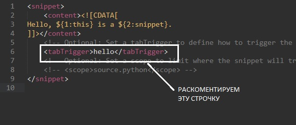

Сниппеты
Создание сниппетов
Tools - Developer - New Snippet...

Вместо hello пишем фразу после табулатории которой будет отображаться текст снипета
В третью строчку помещаем текст сниппета. ${1} - это куда поместить курсор после вызова сниппета.
Сниппеты сохраняем в формате .sublime-snippet
Мои сниппеты:
имя - li4
код:
<snippet>
<content><![CDATA[
<ul>
<li><b></b></li>
<li><b></b></li>
<li><b></b></li>
<li><b></b></li>
</ul>
]]></content>
<!-- Optional: Set a tabTrigger to define how to trigger the snippet -->
<tabTrigger>li4</tabTrigger>
<!-- Optional: Set a scope to limit where the snippet will trigger -->
<!-- <scope>source.HTML</scope> -->
</snippet>